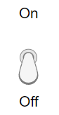

ToggleSwitch
Toggle switch UI component
- 
Description
A toggle switch UI component indicates a logical state and updates its state when
an app user interacts with it. Use the ToggleSwitch object to modify the
appearance and behavior of a toggle switch after you create it.
Creation
Create a toggle switch in an app using the uiswitch function, specifying the switch style as
"toggle".
Properties
Switch
Index of component value in the list of items or item data, specified as a positive integer.
In most cases, you can use the Value property to query and
update the component value. However, the ValueIndex property can
be useful when both the Items and ItemsData
properties are nonempty. In this case, you can use the ValueIndex
property to query the element of Items that corresponds to the
current value.
fig = uifigure; s = uiswitch(fig,"toggle", ... "Items",["Freezing","Boiling"], ... "ItemsData",[0 100]); idx = s.ValueIndex; disp(s.Items(idx) + ": " + s.Value)
Freezing: 0
Font
Font color, specified as an RGB triplet, a hexadecimal color code, or one of the options listed in the table.
RGB triplets and hexadecimal color codes are useful for specifying custom colors.
An RGB triplet is a three-element row vector whose elements specify the intensities of the red, green, and blue components of the color. The intensities must be in the range
[0,1]; for example,[0.4 0.6 0.7].A hexadecimal color code is a character vector or a string scalar that starts with a hash symbol (
#) followed by three or six hexadecimal digits, which can range from0toF. The values are not case sensitive. Thus, the color codes"#FF8800","#ff8800","#F80", and"#f80"are equivalent.
Alternatively, you can specify some common colors by name. This table lists the named color options, the equivalent RGB triplets, and hexadecimal color codes.
| Color Name | Short Name | RGB Triplet | Hexadecimal Color Code | Appearance |
|---|---|---|---|---|
"red" | "r" | [1 0 0] | "#FF0000" |
|
"green" | "g" | [0 1 0] | "#00FF00" |
|
"blue" | "b" | [0 0 1] | "#0000FF" |
|
"cyan"
| "c" | [0 1 1] | "#00FFFF" |
|
"magenta" | "m" | [1 0 1] | "#FF00FF" |
|
"yellow" | "y" | [1 1 0] | "#FFFF00" |
|
"black" | "k" | [0 0 0] | "#000000" |
|
"white" | "w" | [1 1 1] | "#FFFFFF" |
|
This table lists the default color palettes for plots in the light and dark themes.
| Palette | Palette Colors |
|---|---|
Before R2025a: Most plots use these colors by default. |
|
|
|
You can get the RGB triplets and hexadecimal color codes for these palettes using the orderedcolors and rgb2hex functions. For example, get the RGB triplets for the "gem" palette and convert them to hexadecimal color codes.
RGB = orderedcolors("gem");
H = rgb2hex(RGB);Before R2023b: Get the RGB triplets using RGB =
get(groot,"FactoryAxesColorOrder").
Before R2024a: Get the hexadecimal color codes using H =
compose("#%02X%02X%02X",round(RGB*255)).
Interactivity
Tooltip, specified as a character vector, cell array of character vectors, string array, or 1-D categorical array. Use this property to display a message when the user hovers the pointer over the component at run time. The tooltip displays even when the component is disabled. To display multiple lines of text, specify a cell array of character vectors or a string array. Each element in the array becomes a separate line of text. If you specify this property as a categorical array, MATLAB uses the values in the array, not the full set of categories.
Context menu, specified as a ContextMenu object created using the uicontextmenu function. Use this property to display a context menu when
you right-click on a component.
Position
Location and size of the switch, excluding state marks and labels, specified as
the vector, [left bottom width height]. This table describes each
element in the vector.
| Element | Description |
|---|---|
left | Distance from the inner left edge of the parent container to the outer left edge of the switch |
bottom | Distance from the inner bottom edge of the parent container to the outer bottom edge of the switch |
width | Distance between the right and left outer edges of the switch, excluding labels |
height | Distance between the top and bottom outer edges of the switch, excluding labels |
All measurements are in pixel units.
The switch has a fixed width-to-height aspect ratio of 1 to 2.25 with a vertical
orientation and 2.25 to 1 with a horizontal orientation. Therefore, you cannot change
the switch width and height independently of one another. To change the switch size,
specify a desired size for the switch by using s.Position(3:4) = [width
height]. MATLAB automatically sizes the switch to fit within the box defined by the
desired size while maintaining its aspect ratio.
The Position values are relative to the
drawable area of the parent container. The drawable area is the area
inside the borders of the container and does not include the area occupied by decorations such
as a menu bar or title.
Example: [100 200 40 90]
Inner location and size of the switch, excluding state marks and labels, specified
as the vector, [left bottom width height]. Position values are
relative to the parent container. All measurements are in pixel units. This property
value is identical to the Position property.
This property is read-only.
Outer location and size of the switch, including state marks and labels, specified
as the vector, [left bottom width height]. Position values are
relative to the parent container. All measurements are in pixel units.
Layout options, specified as a
GridLayoutOptions object. This property specifies options for
components that are children of grid layout containers. If the component is not a
child of a grid layout container (for example, it is a child of a figure or panel),
then this property is empty and has no effect. However, if the component is a child of
a grid layout container, you can place the component in the desired row and column of
the grid by setting the Row and Column
properties on the GridLayoutOptions object.
For example, this code places a toggle switch in the third row and second column of its parent grid.
g = uigridlayout([4 3]);
s = uiswitch(g,'toggle');
s.Layout.Row = 3;
s.Layout.Column = 2;To make the switch span multiple rows or columns, specify the
Row or Column property as a two-element
vector. For example, this switch spans columns 2 through
3:
s.Layout.Column = [2 3];
Callbacks
Callback Execution Control
Parent/Child
Parent container, specified as a Figure object or
one of its child containers: Tab, Panel, ButtonGroup, or
GridLayout. If no container is specified,
MATLAB calls the uifigure function to create a new Figure object that serves as the parent container.
Identifiers
This property is read-only.
Type of graphics object, returned as 'uitoggleswitch'.
Examples
Create a horizontal toggle switch in a UI figure.
fig = uifigure("Position",[100 100 300 300]); ts = uiswitch(fig,"toggle","Orientation","horizontal");